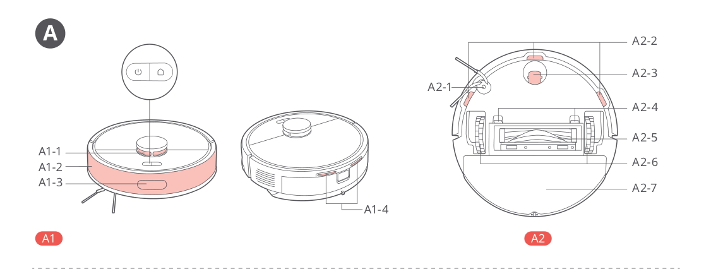
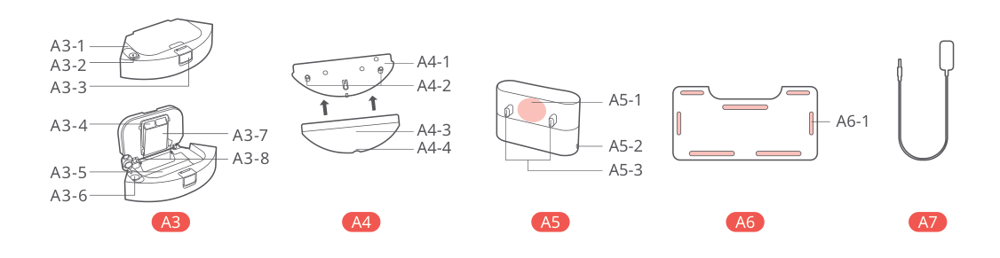
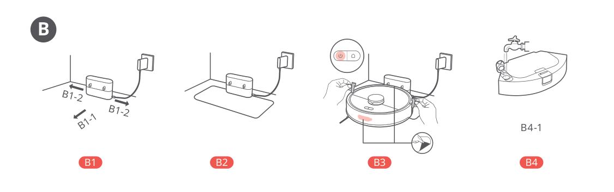
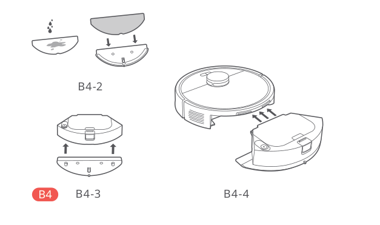
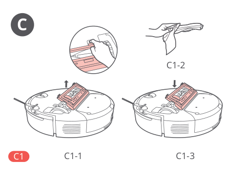
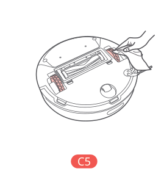
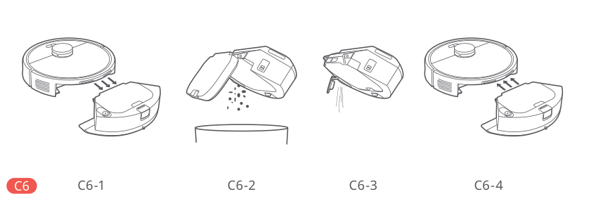
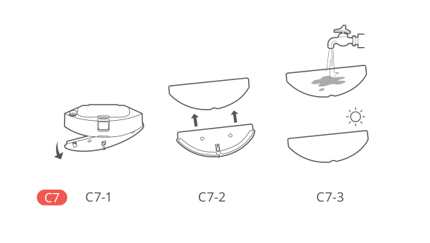
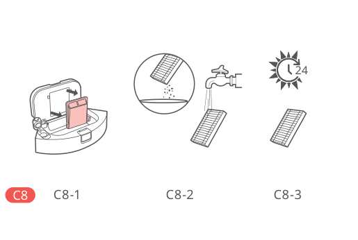
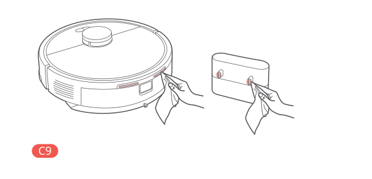

Устройство (A)
Номера деталей на схеме совпадают с номерами в тексте всей инструкции.

A1Робот сверху
- A1-1Лазерный датчик (LiDAR)
- A1-2Бампер
- A1-3Датчик поиска базы
- A1-4Зарядные контакты
A2Робот снизу
- A2-1Боковая щётка
- A2-2Датчики перепада высоты
- A2-3Поворотное колесо
- A2-4Защёлки крышки основной щётки
- A2-5Основная щётка
- A2-6Ведущие колёса
- A2-7Модуль влажной уборки

A3Пылесборник с баком для воды
- A3-1Бак для воды
- A3-2Пробка бака
- A3-3Кнопка извлечения
- A3-4Моющийся фильтр
- A3-5Пылесборник
- A3-6Заливное отверстие
- A3-7Держатель фильтра
- A3-8Защёлки держателя фильтра
A4Модуль влажной уборки
- A4-1Держатель салфетки
- A4-2Защёлки держателя
- A4-3Салфетка
- A4-4Липучки
A5Зарядная база
- A5-1Маяк базы
- A5-2Разъём питания
- A5-3Зарядные контакты
A6Влагозащитный коврик A7Блок питания
- A6-1Клейкая лента коврика
Установка (B)
Перед первым запуском
- Уберите с пола провода, твёрдые и острые предметы (гвозди, стекло) и всё, что валяется. Неустойчивые, хрупкие, ценные и опасные вещи переставьте: робот может в них запутаться, толкнуть или уронить.
- Если робот работает на возвышении (например, на втором уровне двухуровневой квартиры), поставьте физическое ограждение, чтобы он не упал.
В первый раз пройдите за роботом весь его маршрут и посмотрите, где он может застрять. Дальше он будет убирать сам. Перед первой влажной уборкой пропылесосьте пол минимум три раза, иначе салфетка сразу забьётся грязью.

B1Где поставить базу
На твёрдый ровный пол, вплотную к стене. Подключите блок питания к базе, лишний провод уберите. Выберите место с хорошим Wi‑Fi, чтобы приложение работало без сбоев. Включите в розетку и проверьте, что индикатор горит.
- B1-1: спереди свободно больше 1,5 м.
- B1-2: по бокам свободно больше 0,5 м.
- Провод, свисающий до пола, робот может зацепить: база сдвинется или отключится.
- Не ставьте базу на прямое солнце и не загораживайте её маяк, иначе робот не найдёт дорогу назад.
B2Влагозащитный коврик
Когда база стоит на месте, протрите сухой тряпкой пол там, где будет коврик. Снимите защиту с двусторонней ленты снизу коврика и приклейте его к полу.
- На деревянном полу коврик кладите всегда.
- Снимайте ленту медленно, чтобы осталось меньше клея.
- Лучше всего коврик держится на гладкой поверхности.
B3Включение и зарядка
Перед первым включением снимите защитные полоски с обеих сторон робота и плёнку с датчиков поиска базы спереди и сзади. Удерживайте , дождитесь, пока индикатор загорится ровным белым, и поставьте робот на базу. Внутри встроенная литий-ионная батарея: чтобы она дольше служила, держите робот заряженным.
- При низком заряде робот может не включиться. Поставьте его на базу заряжаться.
- Во время зарядки робот не выключается.

B4Влажная уборка
Перед первой влажной уборкой пол нужно пропылесосить минимум три раза, иначе на салфетке соберётся слишком много грязи.
- B4-1Выньте блок «пылесборник + бак», откройте пробку бака, налейте воду из-под крана и закройте пробку. Целиком в воду блок не опускайте.
- B4-2Намочите салфетку и отожмите, чтобы с неё не капало. Наложите её на держатель и прижмите ровно на липучки.
- B4-3Совместите установочное отверстие и вставьте держатель салфетки снизу в блок.
- B4-4Вставьте блок обратно в робот до упора.
- Только холодная вода, иначе бак деформируется.
- Блок «пылесборник + бак» не мойте под водой и не погружайте в воду.
- Без дезинфицирующих средств: только моющее средство, которое рекомендует Roborock.
- После влажной уборки сразу слейте оставшуюся воду из бака.
- Каждый блок на заводе проверяют водой, поэтому немного воды внутри нового блока — это нормально.
Подключение к приложению
1. Установить приложение
Найдите «Roborock» в App Store или Google Play или отсканируйте QR-код из бумажной инструкции.
2. Сбросить Wi‑Fi
Включите робот, затем удерживайте и одновременно 3 секунды, пока не услышите «Entering network configuration mode». Сброс выполнен, когда индикатор медленно мигает белым: робот ждёт подключения.
- Если подключиться не получается (настройки роутера, забыли пароль и т. п.), сбросьте Wi‑Fi и добавьте робот как новое устройство.
- Чтобы отключить Wi‑Fi совсем: сбросьте его и подождите 5 минут, модуль отключится сам. Для повторного подключения снова сбросьте Wi‑Fi.
3. Добавить устройство
В приложении Roborock нажмите «Add Device» или «+» и следуйте подсказкам. Порядок может меняться с обновлениями приложения, поэтому ориентируйтесь на подсказки в нём. Работает только Wi‑Fi 2,4 ГГц.
Работа
Включение и выключение
Удерживайте , чтобы включить: загорится индикатор, робот будет ждать команды. Удерживайте , чтобы выключить робот и закончить уборку. Во время зарядки робот не выключается.
Запуск уборки
Нажмите . Робот строит маршрут и убирает комнаты по очереди: в каждой сначала проходит вдоль стен, потом заполняет площадь зигзагом.
- Перед уборкой уберите с пола провода (в том числе провод базы) и ценные вещи. Робот может их утащить: выдернуть вилку из розетки, повредить провод или вещь.
- Перед каждой уборкой проверьте, что салфетка стоит правильно.
- Чтобы робот сам вернулся на базу, запускайте его с базы и не двигайте базу во время уборки.
- При слишком низком заряде уборка не начнётся. Сначала зарядите робот.
- Если заряд кончается посреди уборки, робот сам едет на базу, а после зарядки продолжает с того же места.
Пауза
Во время работы нажмите любую кнопку: робот встанет на паузу. продолжает уборку, отправляет робот на базу заряжаться.
Если поставить робот на паузе на базу руками, текущая уборка закончится.
Сон
Если робот стоит на паузе больше 10 минут, он засыпает, индикатор мигает раз в несколько секунд. Чтобы разбудить, нажмите любую кнопку.
- Во время зарядки робот не засыпает.
- Если робот проспит больше 12 часов, он выключится сам.
Зарядка
После уборки робот сам возвращается на базу. При низком заряде он тоже едет на базу посреди уборки. Чтобы отправить робот с паузы на базу, нажмите . Пока робот заряжается, индикатор плавно мигает.
Если робот не найдёт базу, он вернётся в точку, откуда начал. Тогда поставьте его на базу руками.
Ошибка
При ошибке индикатор мигает красным, в приложении появляется уведомление, робот может сказать об ошибке голосом.
- Если робот с ошибкой стоит больше 10 минут, он засыпает.
- Если поставить робот с ошибкой на базу руками, текущая уборка закончится.
Режим «Не беспокоить»
По умолчанию с 22:00 до 08:00. Время можно поменять или выключить режим в приложении. В этом режиме робот не говорит голосом. Ещё он не уезжает доубирать после подзарядки: см. неполадки.
Сброс до заводских настроек
Если робот не реагирует на кнопки или не выключается: включите его и удерживайте 5 секунд. После голосового сообщения снова удерживайте 5 секунд. Робот перезагрузится с заводскими настройками.
Расписание уборок, Wi‑Fi и другие настройки сотрутся.
Режим низкого энергопотребления
Когда робот стоит на базе, удерживайте 10 секунд, чтобы включить режим. Чтобы выключить, нажимайте , пока индикатор не станет ярче.
Уход (C)
Перед чисткой выключите робот и выньте вилку базы из розетки.
| Деталь | Чистить | Менять |
|---|---|---|
| Салфетка C7 | После каждой уборки | Раз в 3–6 месяцев |
| Основная щётка C1 | Раз в 2 недели | Раз в 6–12 месяцев |
| Моющийся фильтр C8 | Раз в 2 недели | Раз в 6–12 месяцев |
| Боковая щётка C2 | Раз в месяц | Раз в 3–6 месяцев |
| Датчики, колёса, пылесборник, контакты C3–C6, C9 | По мере загрязнения | — |

C1Основная щётка
Чистить раз в 2 недели, менять раз в 6–12 месяцев- C1-1Переверните робот, нажмите защёлки и снимите крышку основной щётки.
- C1-2Выньте щётку и почистите её.
- C1-3Поставьте щётку и крышку на место, прижмите крышку до щелчка.
- Щётку лучше протирать влажной тряпкой. Если она намокла насквозь, сушите на воздухе, не на прямом солнце.
- Без едких чистящих средств и дезинфекции.
C2Боковая щётка
Чистить раз в месяц, менять раз в 3–6 месяцевОткрутите винт боковой щётки, снимите и почистите её. Поставьте обратно и закрутите винт.
C3Датчики
По мере загрязненияПротрите все датчики мягкой сухой тряпкой: C3-1 датчики поиска базы, C3-2 датчики перепада высоты. Без химии: никаких чистящих жидкостей и спреев.
C4Поворотное колесо
По мере загрязнения- C4-1Подденьте ось чем-нибудь тонким, например маленькой отвёрткой, и выньте колесо.
- C4-2Промойте колесо и ось водой, чтобы смыть волосы и грязь. Высушите, поставьте на место и вдавите колесо с осью до упора.
Кронштейн колеса не снимается.


C5Ведущие колёса
По мере загрязненияПротрите колёса мягкой сухой тряпкой.
C6Пылесборник с баком
По мере загрязнения- C6-1Нажмите кнопку извлечения и выньте блок.
- C6-2Откройте крышку, вытряхните пыль и почистите пылесборник.
- C6-3Откройте пробку бака и слейте воду.
- C6-4Вставьте блок обратно в робот.
После влажной уборки слейте воду, постирайте салфетку и высушите их на воздухе, иначе появится запах.


C7Салфетка
Чистить после каждой уборки, менять раз в 3–6 месяцев- C7-1Снимите держатель салфетки в направлении, показанном на схеме.
- C7-2Отделите салфетку от держателя.
- C7-3Постирайте салфетку и высушите на воздухе.
C8Моющийся фильтр
Чистить раз в 2 недели, менять раз в 6–12 месяцев- C8-1Откройте крышку блока «пылесборник + бак», как на схеме, нажмите защёлки держателя фильтра и вытащите держатель.
- C8-2Выньте фильтр из держателя, несколько раз промойте и постучите им, чтобы вытряхнуть как можно больше грязи.
- C8-3Сушите фильтр не меньше 24 часов, пока он полностью не высохнет, и только потом ставьте на место.
Не трогайте поверхность фильтра руками, щёткой и острыми предметами: можно повредить.

C9Зарядные контакты
По мере загрязненияПротрите мягкой сухой тряпкой зарядные контакты на роботе и на базе.
Неполадки
| Проблема | Решение |
|---|---|
| Не включается |
|
| Не заряжается |
|
| Не возвращается на базу |
|
| Ведёт себя странно | Перезагрузите робот. |
| Не подключается к Wi‑Fi |
|
| Робот офлайн | Проверьте, что робот подключён к приложению Roborock и всё время находится в зоне Wi‑Fi. |
| Шумит при уборке |
|
| Плохо убирает или сыплет пыль |
|
| Не срабатывает уборка по расписанию | Держите робот заряженным: уборка по расписанию начинается, только если заряд больше 20 %. |
| После подзарядки не продолжает уборку |
|
| Медленно заряжается |
|
| Тратит ли энергию, когда стоит на базе? | Да, чтобы поддерживать батарею, но потребление очень маленькое. |
| Нужно ли первые три раза заряжать по 16 часов? | Нет. У литий-ионных батарей нет эффекта памяти: после полной зарядки робот можно сразу использовать. |
| Стал пропускать места | Могли загрязниться датчики перепада высоты. Протрите их мягкой сухой тряпкой. |
| Мало воды или нет воды при влажной уборке |
|
| Не может вернуться на базу после того, как его перенесли руками | Если сильно поменять положение робота, он заново строит карту. Если база слишком далеко, он может её не найти: тогда поставьте его на базу руками. |
Безопасность
Внимание
- Заряжайте робот только на базе Roborock AED08HRR или SPCDZ03RR с блоком питания Roborock BLJ18WD200080P-V, -S или -B.
- Перед чисткой и обслуживанием выключите робот и выньте вилку из розетки.
- База заряжает только робот с литий-ионной батареей 14,4 В / 3 200 мА·ч.
Батарея и зарядка
- Напряжение в сети должно совпадать с указанным на базе.
- Чтобы не было дыма, перегрева и пожара, используйте только батарею, зарядку, провод, базу и аксессуары из комплекта.
- Не выбрасывайте старые батареи, сдавайте их в пункт переработки.
- Если у вас часто грозы или скачет напряжение, защитите базу.
- Если робот долго не нужен: полностью зарядите, отключите от сети, выключите и храните в прохладном сухом месте. Подзаряжайте минимум раз в три месяца, иначе батарея глубоко разрядится.
- Перед перевозкой отключите базу, выключите робот и слейте воду из бака. Лучше везти в родной коробке.
Значок с домиком на корпусе означает: только для помещений.
Осторожно
- Пользуйтесь только по инструкции. Ущерб от неправильного использования ложится на пользователя.
- Это не игрушка. Внимательно следите, если робот работает рядом с детьми.
- Перед уборкой проверьте, что на месте пылесборник, фильтр, боковая щётка, салфетка, основная щётка и её крышка.
- Не убирайте роботом твёрдое и острое: строительный мусор, стекло, гвозди. Поцарапаются робот, база и пол.
- Не садитесь и не вставайте на робот и базу.
- Без дезинфекции: только моющее средство, которое рекомендует Roborock.
- Не оставляйте низкие предметы (обувь, коврики) у лестниц и других перепадов: датчики могут ошибиться, и робот упадёт.
- На полу, где работает робот, не должно быть воды.
- Не запускайте робот на возвышении без ограждения: на антресоли, открытой террасе, горке, мебели.
- Держите волосы, свободную одежду, пальцы и любые части тела людей и животных подальше от щелей, отверстий и движущихся деталей.
- Не включайте робот в комнате, где спит младенец или ребёнок.
- Не переносите робот за бампер или боковую щётку.
- Не собирайте горящее и тлеющее (сигареты, спички, горячий пепел) и горючее или взрывоопасное (зажигалки, бензин, тонер для принтеров).
- Ставьте базу на твёрдый ровный пол. Базу, робот и провод держите подальше от огня и батарей отопления. Не ставьте их во влажных и тесных местах и там, где робот может повиснуть в воздухе.
- Ничего не кладите на робот и базу и не накрывайте их, даже пылезащитным чехлом.
- Не пользуйтесь повреждённым устройством, обратитесь в поддержку.
- Включайте робот в проветриваемых помещениях, чтобы он не перегревался.
- Не мойте робот и базу водой.
- Roborock не отвечает за косвенный, штрафной, случайный и последующий ущерб от использования или невозможности использовать устройство. Это не отменяет прав, которые даёт закон.
Параметры
| Узел | Модель | Питание |
|---|---|---|
| Робот | RRA0TAC | Литий-ионная батарея 14,4 В / 3 200 мА·ч; вход 20 В пост. тока, 0,8 А |
| Зарядная база | SPCDZ03RR | Вход и выход 20 В пост. тока, 0,8 А |
| Блок питания | BLJ18WD200080P-V, -S или -B | Вход 100–240 В переменного тока, 50/60 Гц, 0,8 А; выход 20 В пост. тока, 0,8 А |
Блок питания рассчитан на 100–240 В, поэтому подходит для обычной розетки 230 В в Сербии. Roborock заявляет, что робот RRA0TAC соответствует директиве ЕС 2014/53/EU, полный текст декларации лежит на global.roborock.com/pages/compliance.
Оригинал
Перевод сделан с английского PDF. Если какой-то пункт кажется странным, сверьтесь с оригиналом: номера разделов и схем те же.
- Roborock — Q7B CE User Manualстраница поддержки: руководство на 13 языках, русского нет
- Roborock Q7B CE EN User Manual (PDF)английский оригинал этого перевода, 12 страниц
- Roborock Q7B Diagram (PDF)схемы A–C, по ним нарезаны картинки на этой странице
- Safety Guidelines & Certification (CE) (PDF)правила безопасности и сертификация